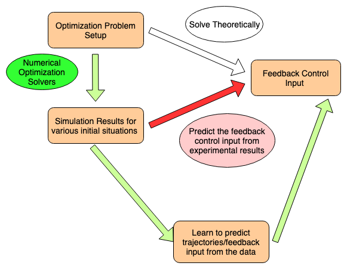
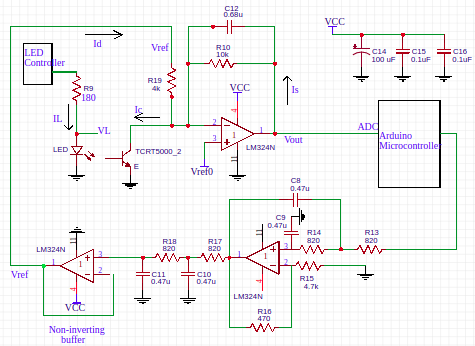

|
Hello All !! Welcome to my tiny corner on the web. Currently, I am an Assistant Researcher at Hitachi Central Research Lab, Tokyo advised by Katsuyuki Nakamura and Takumi Nito. I work on developing support tools for navigation of human workers in dynamic real-world environments. My broad research interests currently include Machine Learning, Computer Vision, Robotics, and Signal Processing Prior to this, I spent 4 amazing years at IIT Bombay, earning a Bachelor's in EE with a Minor in CS. I was advised by Debraj Chakraborty for my bachleor's thesis on optimal pursuer-evader shepherding problem. |
| |

|
abstract /
paper /
arxiv /
presentation
The Global Navigation Satellite Systems (GNSS)like GPS suffer from accuracy degradation and are almost unavailable in indoor environments. Indoor positioning systems(IPS) based on WiFi signals have been gaining popularity.However, owing to the strong spatial and temporal variationsof wireless communication channels in the indoor environment,the achieved accuracy of existing IPS is around several tens ofcentimeters. We present the detailed design and implementationof a self-adaptive WiFi-based indoor distance estimation systemusing LSTMs. The system is novel in its method of estimatingwith high accuracy the distance of an object by overcomingpossible causes of channel variations and is self-adaptive tothe changing environmental and surrounding conditions. Theproposed design has been developed and physically realized overa WiFi network consisting of ESP8266 (NodeMCU) devices. Theexperiments were conducted in a real indoor environment whilechanging the surroundings in order to establish the adaptabilityof the system. We compare different architectures for this taskbased on LSTMs, CNNs, and fully connected networks (FCNs).We show that the LSTM based model performs better amongall the above-mentioned architectures by achieving an accuracyof5.85cm with a confidence interval of93%on the scale of(8.46m x6.98m). To the best of our knowledge, the proposedmethod outperforms other methods reported in the literature bya significant margin. |
| |
|  |
abstract /
Thesis /
Presentation
In this report, we proposed an interaction rule between an evader and a pursuer and our objective was to try to find an optimal feedback control for the pursuer to drive the evaders to destination. With this regard, we first formulated our problem as a constrained optimization problem and solved using global search algorithm available in global optimization toolbox of matlab. The result from these ex- periments were then used to predict a feedback control algorithm but unfortunately this could not be made possible. Then we shifted from predicting ourselves to let the machine learn from the data and predict the trajectory for us. We used LSTM-based model with fully connected layers and posed the problem as a regression task to produce pursuer next position given current and past trajectory infor- mation of all the agents. The experimental results from the optimization task was used as dataset for this approach. After training, the trajectories were estimated iteratively for numerous initial conditions but we could not get the desired result. This approach requires modifications in order for it to work. |
|  |
abstract /
Technical Report
A photoplethysmogram (PPG) is an optically obtained plethysmogram, a volumetric measurement of an organ. With each cardiac cycle the heart pumps blood to the periphery. The change in the volume caused by the blood is detected by illuminating the skin with IR light. We developed and implemented an electronic system to capture and display the PPG signal. We make infrared (IR) light incident on finger tip and measure the reflected IR light using a phototransistor which contains the PPG signal. The raw PPG signal is in the form of current output of the phototransistor, typically [0.2 - 0.4] mA, and we use a current to voltage converter to get the voltage signal. The raw PPG often has a large slowly varying baseline and it needs to be restored to optimally use the available ADC range. We carry out baseline restoration by controlling the bias voltage of the current injector using a microcontroller. We amplify the signal using a fixed value of gain resistor in the current to voltage converter. We also designed an auto-led intensity control to control the LED current and hence the emitted IR light in an effort to make the acquisition module adaptable to users with varying skin colours, motion artifacts etc. Finally we display the PPG signal on an android smartphone by transmitting the PPG signal over bluetooth. |
|
EE 210: Signals and Systems, Spring '19, IIT Bombay |